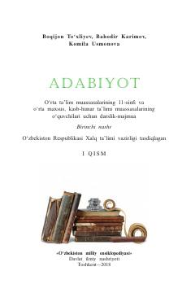

1A11-sinf o'quvchilari uchun mo'ljallangan rasmiy adabiyot darsligi.
Ushbu darslik-majmua umumiy o'rta ta'lim muassasalarining 11-sinf o'quvchilari uchun mo'ljallangan bo'lib, badiiy adabiyot namunalari, mumtoz va zamonaviy adabiyot tahlillarini o'z ichiga oladi. Kitob o'quvchilarning adabiy-estetik tafakkurini o'stirish, mustaqil fikrlash va kitobxonlik madaniyatini yuksaltirishga xizmat qiladi.